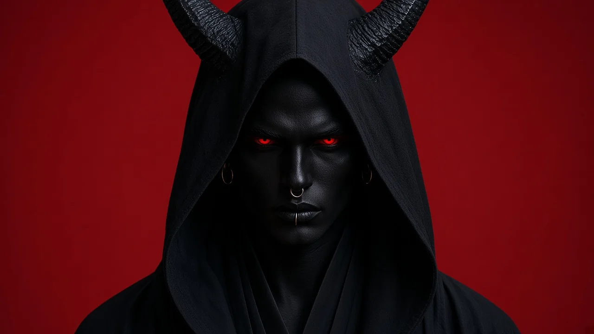

When the signal was cut, they put on skulls of bone and glass, hoods of lacquer and crowns of thorn. Nine orders keep the silence now. Each one asks for it with a single gesture.

An art series by Seth — The Liturgy of the Severed SignalA faith born after the networks went dark.
When the signal was cut, they put on skulls of bone and glass, hoods of lacquer and crowns of thorn. Nine orders keep the silence now. Each one asks for it with a single gesture.